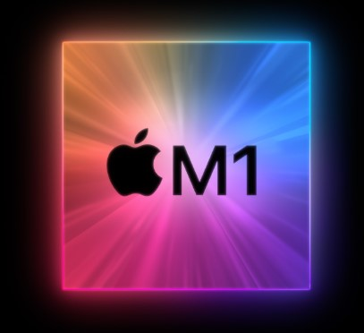
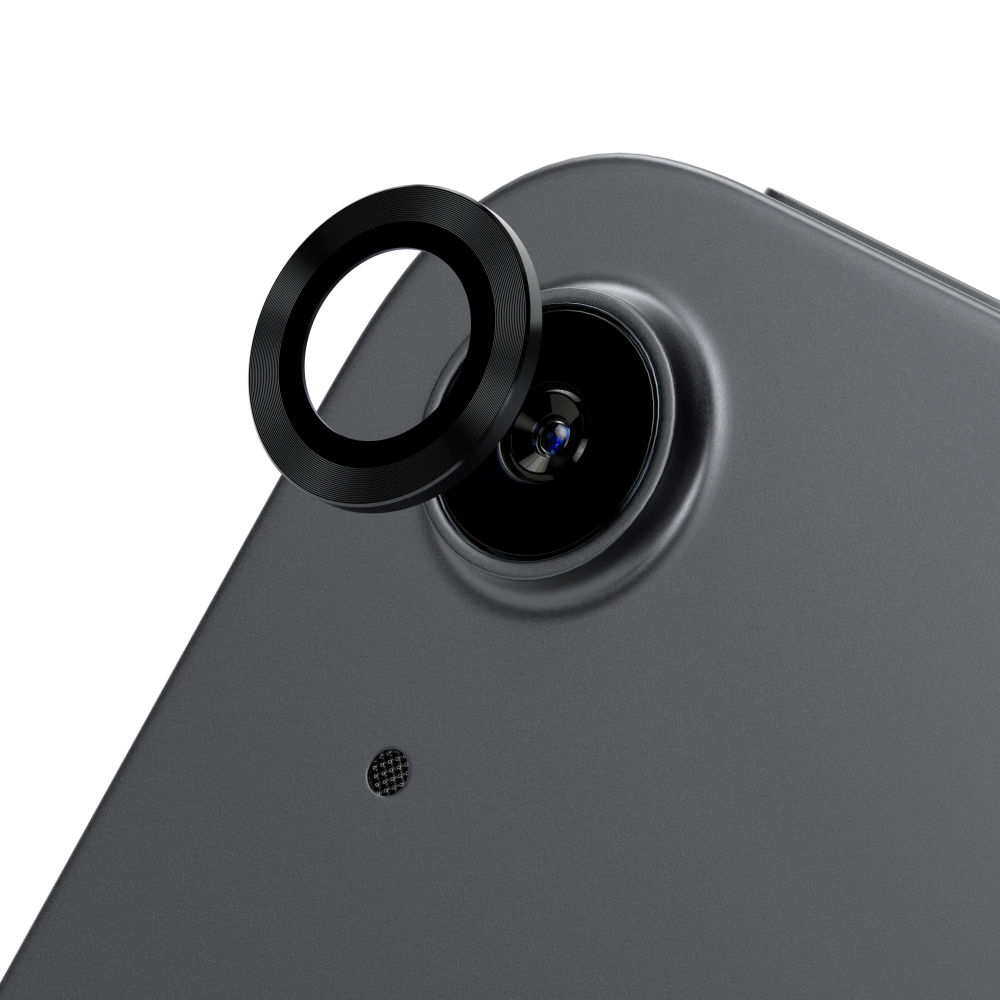

The M1 chip is a custom-designed, high-performance microprocessor created by Apple. It
is built on a 5-nanometer process, which allows for a large number of transistors to be packed into a small
area, resulting in faster and more efficient performance. The chip features an 8-core CPU, a 16-core Neural
Engine, and an integrated GPU, all of which work together to provide powerful performance for a wide range of
tasks.
One of the key advantages of the M1 chip is its ability to run both iOS and macOS apps natively, which means
that users can run their favorite iPhone and iPad apps on their Mac. Additionally, the M1 chip has been designed
to be energy-efficient, which allows for longer battery life and less heat generation

The iPad Air features a powerful camera system that allows users to take stunning photos and
videos. It has a 12-megapixel primary camera and a 7-megapixel front-facing camera, both of which are equipped
with advanced features such as auto focus, exposure control, and noise reduction. The rear camera can also shoot
4K video at up to 60 frames per second, and it supports slow-motion and time-lapse video recording. The
front-facing camera is also capable of recording 1080p HD video. In addition to traditional photography, the
iPad Air's camera system also supports augmented reality (AR) experiences, which allow users to interact with
digital content overlaid on the real world. Overall, the iPad Air's camera system is a great tool for capturing
memories, staying connected with others, and exploring new possibilities with AR.